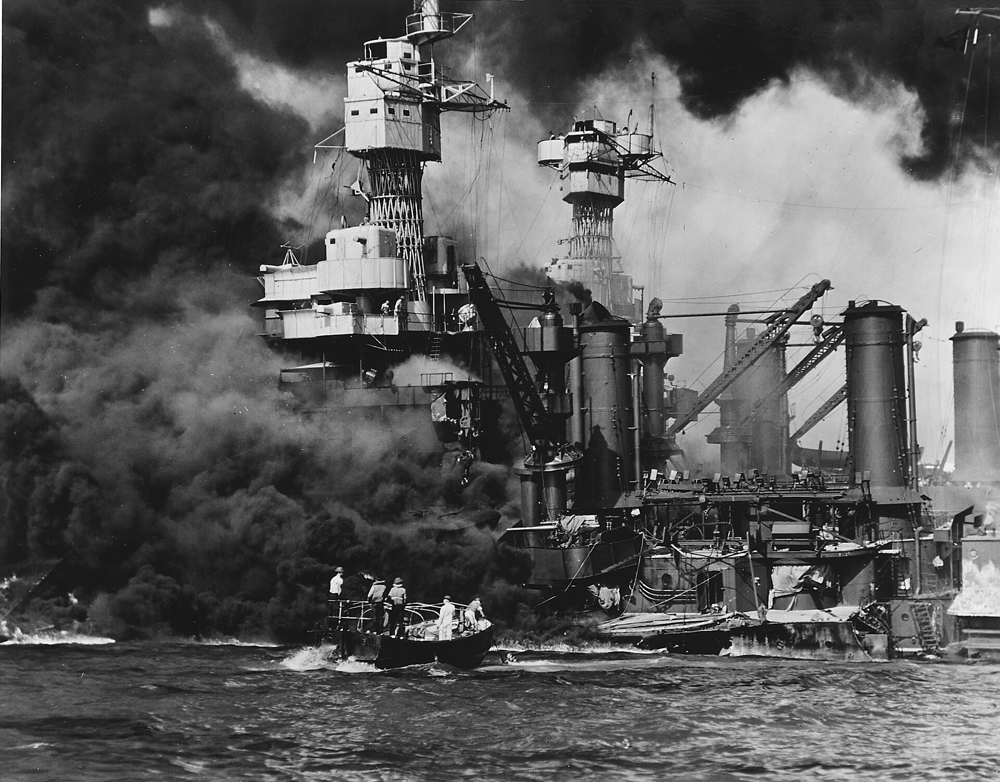

Directions: Study the photograph and the background, then answer the questions.

Background. On the morning of December 7, 1941, Japanese carrier aircraft attacked the Pacific Fleet at Pearl Harbor, Hawaii. More than 2,400 Americans were killed, all eight battleships in the harbor were damaged, and 188 American aircraft were destroyed. The fleet's aircraft carriers were at sea and survived. Congress declared war on Japan the next day, and Germany and Italy declared war on the United States on December 11. At the Arcadia Conference the Allied staffs held to the Germany first strategy, while the Soviet Union pressed for a second front in France.
1. What is burning in the photograph, and what happened at this place on December 7, 1941? Give two figures from the background in your answer.
2. The battleship fleet was wrecked in one morning. Why did the attack still leave the United States able to fight at sea in the Pacific in 1942?
3. It is December 12, 1941. A classmate says the United States is at war with Japan only, because Congress declared war only on Japan. Correct the statement, naming the date and the two countries involved.
4. Explain the Germany first strategy and the reasoning behind it, then name the demand the Soviet Union pressed against it and the reason the Soviet Union gave.
1. What is burning, and what happened? The photograph shows USS West Virginia burning at Pearl Harbor on December 7, 1941, during the Japanese carrier attack on the Pacific Fleet at Pearl Harbor, the United States naval base in Hawaii. Any two figures earn the point: more than 2,400 Americans killed (2,403 in the Navy accounting), all eight battleships in the harbor damaged with four sunk, 188 American aircraft destroyed and 159 damaged. (Blueprint 3)
2. Why could the United States still fight at sea in the Pacific? The Pacific Fleet aircraft carriers were at sea on the morning of the attack and survived untouched. The Pacific war was fought from carriers, and the force that would fight it had not been in the harbor. The harbor installations and fuel reserves also survived. (Blueprint 3)
3. Correct the statement about December 12. By December 12 the statement was already out of date. On December 11, 1941, Germany and Italy declared war on the United States, and Congress answered the same day with declarations of its own. The United States was at war with all three Axis powers and faced a two-ocean war. (Blueprint 3)
4. Explain Germany first, and name the Soviet demand. Germany first was the Allied strategy of concentrating the main effort on defeating Germany before Japan, agreed by the American and British staffs and kept through the war. Germany was judged the stronger enemy, able to knock Britain or the Soviet Union out of the war, while Japan would be held in the Pacific theater. The Soviet demand was a second front, the Allied invasion of German-held western Europe that the Soviet Union demanded from 1942 onward to draw German strength away from the Eastern Front, where Soviet forces carried the largest land fighting. (Blueprint 4)
Teacher note. This check is formative. Question 3 is the entry diagnostic: students who still date the German war to an American decision have missed the lesson's central reversal, that the enemy settled the two-ocean question. Question 4 predicts success on the writing task, because it requires both halves of the strategy argument, the agreement and the demand pressed against it.